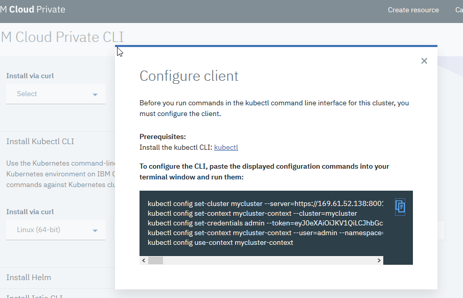
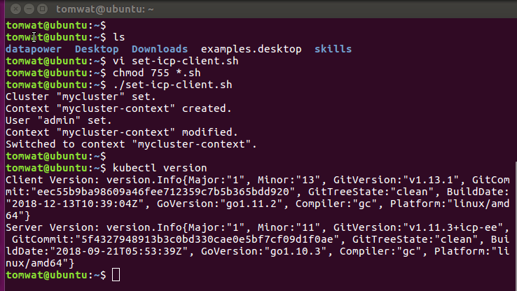

Dave Krier ICP 311 instructions:
https://ibm-icp-coc.github.io/ICP-311-Install/
Notes:
1. I went with 1 master node and 1 worker node. Each configured as 8vcpu and 32gb RAM.
2. take your time and switch back and forth between master and worker config. I got into some kind of ssh issue because I went too fast
Set my Kuberntes client to IBM Cloud Private kubernetes config:
Go to the ICP GUI, and select "Configure Client"
On your client, run the script "set-icp-client.sh" in my HOME dir

